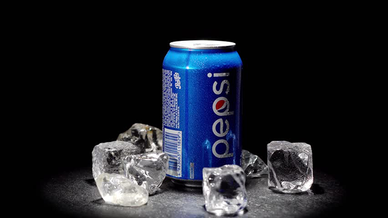

Origins | Revival | PostWar | New Generation | Today

Origins |
Revival |
PostWar |
New Generation |
Today
CoCa cola é
Pepsi Cola is one of the most recognizable products in the world today, almost as famous for its commercials as for its never-ending battle with rival soft drink Coca-Cola. From its humble origins more than 125 years ago in a North Carolina pharmacy, Pepsi has grown into a product available in multiple formulations. Find out how this simple soda became a player in the Cold War and became a pop star's best friend.

A fórmula original do que viria a ser a Pepsi Cola foi inventada em 1893 pelo farmacêutico Caleb Bradham, de New Bern, Carolina do Norte. Como muitos farmacêuticos da época, ele operava uma máquina de refrigerantes em sua farmácia, onde servia bebidas que ele mesmo criava. Sua bebida mais popular era o que ele chamava de "bebida do Brad", uma mistura de açúcar, água, caramelo, óleo de limão, nozes de cola, noz-moscada e outros aditivos.
As the beverage caught on, Bradham decided to give it a snappier name, eventually settling on Pepsi-Cola. By the summer of 1903, he had trademarked the name and was selling his soda syrup to pharmacies and other vendors throughout North Carolina. By the end of 1910, franchisers were selling Pepsi in 24 states.
At first, Pepsi had been marketed as a digestive aid, appealing to consumers with the slogan, "Exhilarating, Invigorating, Aids Digestion." But as the brand flourished, the company switched tactics and decided instead to use the power of celebrity to sell Pepsi. In 1913, Pepsi hired Barney Oldfield, a famous racecar driver of the era, as a spokesman. He became famous for his slogan "Drink Pepsi-Cola. It Will Satisfy You." The company would continue to use celebrities to appeal to buyers in the coming decades.
After years of success, Caleb Bradham lost Pepsi Cola. He had gambled on the fluctuations of sugar prices during World War I, believing that sugar prices would continue to rise — but they fell instead, leaving Caleb Bradham with an overpriced sugar inventory. Pepsi Cola went bankrupt in 1923.
In 1931, after passing through the hands of several investors, Pepsi Cola was bought by the Loft Candy Co. Charles G. Guth, Loft's president, struggled to make a success of Pepsi during the depths of the Great Depression. At one point, Loft even offered to sell Pepsi to executives at Coke, who refused to offer a bid.
Guth reformulated Pepsi and began selling the soda in 12-ounce bottles for just 5 cents, which was twice as much as what Coke offered in its 6-ounce bottles. Touting Pepsi as "twice as much for a nickel," Pepsi scored an unexpected hit as its "Nickel Nickel" radio jingle became the first to be broadcast coast to coast. Eventually, it would be recorded in 55 languages and named one of the most effective ads of the 20th century by Advertising Age.
Pepsi made sure it had a reliable supply of sugar during World War II, and the drink became a familiar sight to U.S. troops fighting all across the globe. In the years after the war, the brand would remain long after American GIs had gone home. Back in the States, Pepsi embraced the postwar years. Company president Al Steele married actress Joan Crawford, and she frequently touted Pepsi during corporate gatherings and visits to local bottlers throughout the 1950s.
By the early 1960s, companies like Pepsi had set their sights on the Baby Boomers. The first ads appealing to young people called "the Pepsi Generation" arrived, followed in 1964 by the company's first diet soda, also targeted at young people.
The company was changing in different ways. Pepsi acquired the Mountain Dew brand in 1964 and a year later merged with snack-maker Frito-Lay. The Pepsi brand was growing up quickly. By the 1970s, this once failing brand was threatening to displace Coca-Cola as the top soda brand in the U.S. Pepsi even made international headlines in 1974 when it became the first U.S. product to be produced and sold within the U.S.S.R.
Throughout the late 1970s and early '80s, "Pepsi Generation" ads continued to appeal to young drinkers while also targeting older consumers with a series of "Pepsi Challenge" commercials and in-store tastings. Pepsi broke new ground in 1984 when it hired Michael Jackson, who was in the midst of his "Thriller" success, to be its spokesman. The TV commercials, rivaling Jackson's elaborate music videos, were such a hit that Pepsi would hire a number of well-known musicians, celebrities, and others throughout the decade, including Tina Turner, Joe Montana, Michael J. Fox, and Geraldine Ferraro.
Pepsi's efforts were successful enough that in 1985 Coke announced that it was changing its signature formula. "New Coke" was such a disaster that the company had to backtrack and reintroduce its "classic" formula, something Pepsi frequently took credit for. But in 1992, Pepsi would suffer a product failure of its own when the spin-off Crystal Pepsi failed to impress Generation X buyers. It soon was discontinued.
Like its rivals, the Pepsi brand has diversified far beyond what Caleb Bradham could ever have imagined. In addition to the classic Pepsi Cola, consumers can also find Diet Pepsi, plus varieties without caffeine, without corn syrup, flavored with cherry or vanilla, even an 1893 brand that celebrates its original heritage. The company has also branched out into the lucrative sports drink market with the Gatorade brand, as well as Aquafina bottled water, Amp energy drinks, and Starbucks coffee beverages.